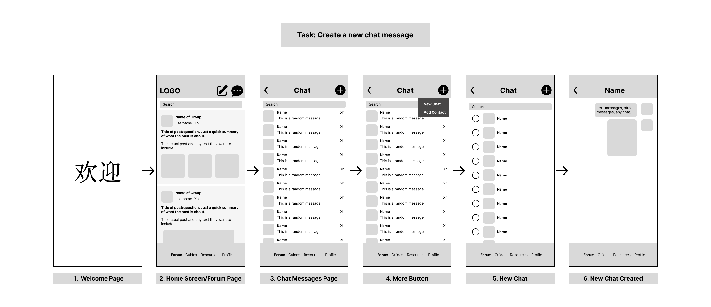
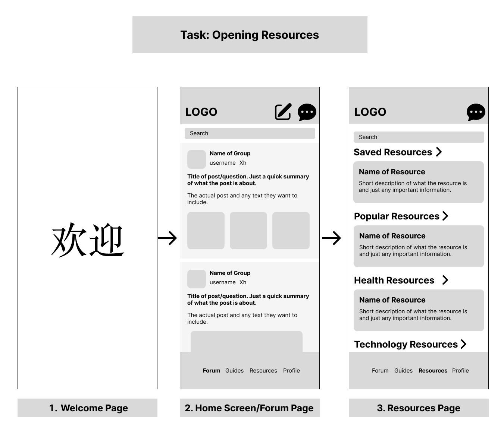
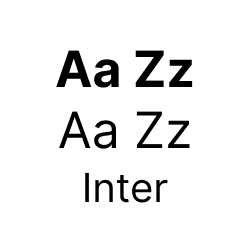
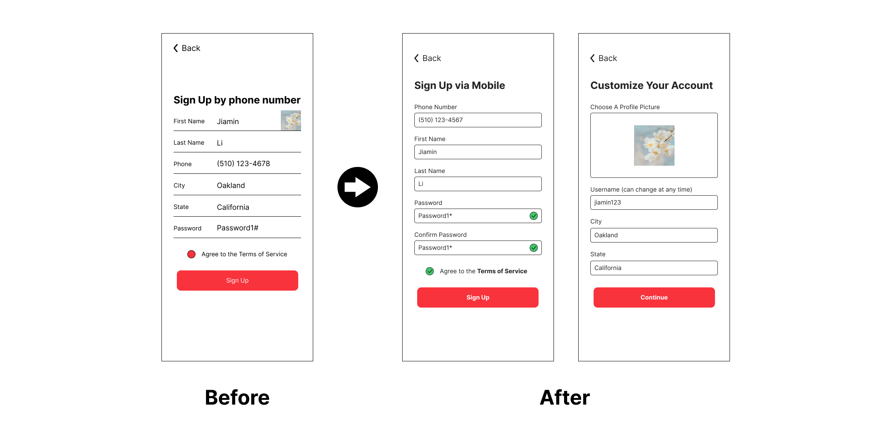
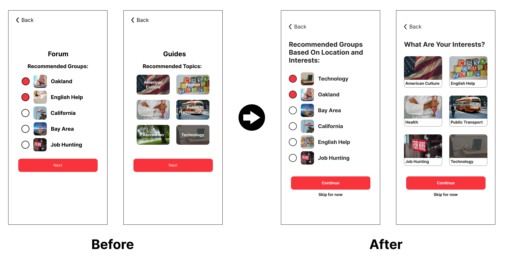
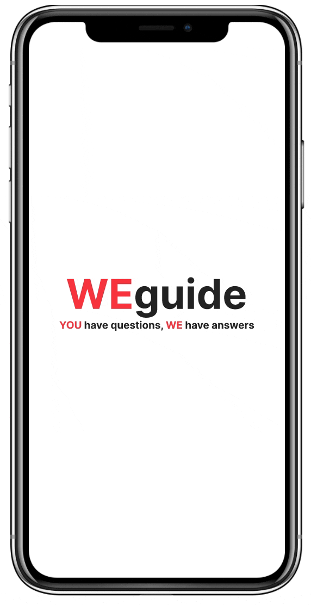
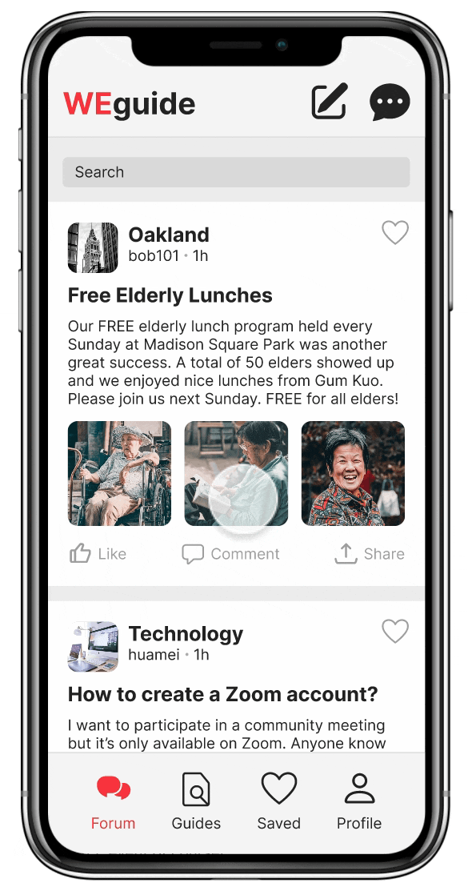
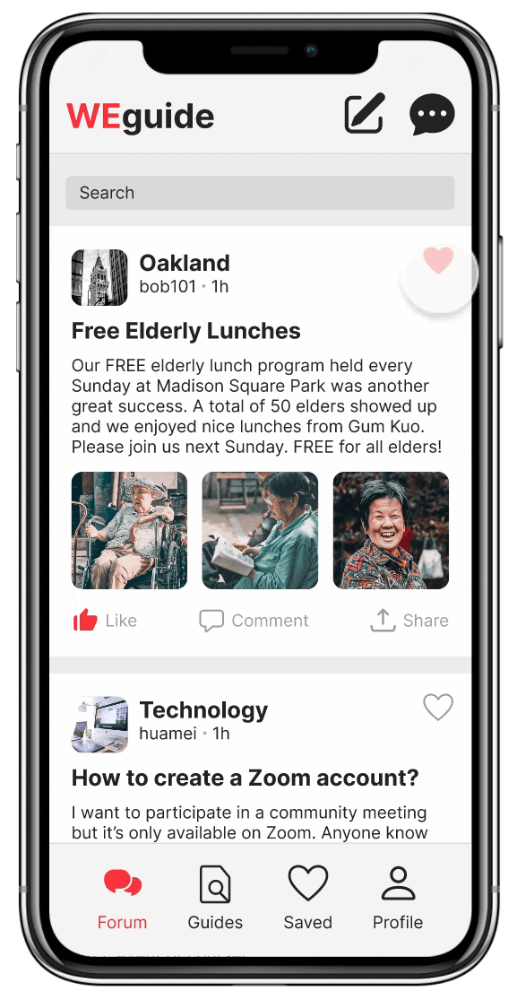

Weguide
.png)
Overview
Weguide is a mobile app designed to help Chinese immigrants navigate through their new life in the United States.
Role
UX Design, UX Research
Timeframe
5 weeks (May - June 2022)
Tools
Figma
Problem Statement
How might we support Chinese immigrants who have trouble assimilating to their new home in America due to the language barrier and digital illiteracy so that they are able to improve their standard of living?
Nearly 2.7 million Chinese immigrants suffer from a language barrier living in the United States. As a result, many Chinese immigrants choose to live in ethnic enclaves such as Chinatown where they only interact with other Chinese immigrants. Though they are able to complete most essential everyday tasks within these enclaves, there are times when they inevitably have to venture out. Weguide was designed to make that process a little less intimidating.
Empathizing With the User
Since high school, I have been working at a local non-profit helping to promote Oakland Chinatown businesses and support the local community. During my time there, I observed that the two greatest hurdles for the community are the language barrier and low digital literacy. For example, merchants are unable to adapt and update their business models due to their low digital literacy and do not know how to seek help due to the language barrier, resulting in dozens of Oakland Chinatown businesses closing within the span of a couple of years.
In hopes of helping the community, we decided to host a series of online workshops to share tips and resources. However, none of them could attend because they did not know how to download Zoom. In order to teach elders how to download and use Zoom, I created a step-by-step guide with images and clear Chinese instructions. This experience is the inspiration for Weguide. I wanted to create an app that could teach them how to do simple tasks that could make small yet impactful improvements to their daily lives.
In recent years, most elders have slowly learned to use WeChat, a popular Chinese messaging app, to keep in contact with family back in China. Our non-profit created a group chat in WeChat to help everyone stay connected and for community members to ask questions. However, we soon realized this was ineffective as their questions always got lost in the sea of messages. Members of our group chat have expressed that they wished there was a forum to ask questions instead. Thus, I also added a forum feature on my app so users can share their experiences, meet new friends, and learn about different opportunities and events to brighten up their life in the United States.
Target Audience
My target audience is Chinese immigrants ages 40+ who have low English proficiency and low digital literacy.
User Persona
Based on my target audience, I created two user personas.

User Persona 1: Mei Jia Fang

User Persona 2: David (Jia Feng) Li
Low-fidelity Wireframing
Next, I created task flows with lo-fi wireframes for my 3 features:
Forum: Users can post questions, share experiences, and interact with other users. To build deeper connections, a chat function was added so users can private message users they meet on the Forum.
Guides: Users can access Guides to learn to do basic, essential tasks. These Guides are available in both English and Chinese and are packed with visuals to make it easier to understand. Users can also save their favorite Guides so they are easily accessible.

Resources: A Resources feature was added so users can have access to translated Resources all in one place.
Mid-fidelity Prototyping
I then added color to my lo-fi wireframes and began prototyping.
Typography
I picked Inter, a san serif designed for user interfaces with a focus on high legibility of small-to-medium sized text on computer screens. Legibility was vital for me since my target audience is older and often has trouble reading due to their poor eyesight.
Color Scheme
My target audience is one that prioritizes usability and simplicity as opposed to aesthetics. As a result, I kept my colors very simple. My app is comprised of black, white, grey, and with a pop of color, red. I picked the color red because in Chinese culture it represents good fortune and joy. I spent a lot of time looking for the perfect red color that was still bright and energetic while not being hard on the eyes and easy to read. I also used green for positive reinforcement.

User Testing: Round 1
After creating my first prototype, I tested the user’s ability to navigate the app and asked about overall first impressions. This first round of testing was crucial in providing good insights for changes within the initial task flows.

Removing The Resources Feature
I decided to remove the Resources feature because users expressed cognitive overload and confusion between Guides and Resources. They expressed that there are way too many different resources and that it would be impossible to provide a comprehensive list of resources to users. It would be easier for users to just look up resources online. Instead, useful resources could be integrated with guides through the use of links.
Adding A Loved Tab
A Loved tab was added for users to easily access saved forum posts and guides.
Onboarding
Users were confused about the features of the app and were unsure about how to navigate the app, so an onboarding section was added to the signup process to introduce the different features for a smoother user experience.
Changed Format of Sign Up Process
Users had a lot of difficulty with the signup process. My touch targets were too small and unclear so users had a hard time filling out the signup information page. Users also felt that the information page asked for too many things and resulted in cognitive overload. Thus, the layout of the signup information screen was changed and touch targets were made larger to make it clearer where to click. The personal information section was also broken up into 2 frames to reduce cognitive overload.
Made The Add Interests Section More Clear
During the Add Interests section of the signup process, users expressed they did not understand the purpose of the section. In addition, they expressed that the color contrast made it hard to read the words on my buttons. Thus, for my new iteration the Add Interests section was made more clear with more descriptions and the components were changed to make it easier to read.
Additional Changes
In addition to the above-stated changes, many other minor improvements were made based on the feedback I received during my first round of user testing. To read a comprehensive list of suggestions during my user testing, please read my complete user testing feedback: User Testing Feedback
User Testing: Round 2
By round 2 of user testing, I had moved on to high-fidelity prototyping. Overall, there was less confusion in comparison to my first round of usability testing due to the changes I made based on the feedback. However, some pages were still a bit confusing and needed polishing. Thus, the following edits were made:
Consolidated Add Interests Section
Users still expressed that the Add Interests Section was unclear as they did not understand why they had to do it for both forum and guides. They also did not see the need to be recommended guides. Thus, the Add Interests section was simplified into one frame where users can pick interests to be recommended groups for the forum.
Added Chinese Version
Ultimately, this app was created for Chinese immigrants who prefer Chinese. Thus, a Chinese language option was added. I also created a preview of what the Chinese version would look like.
Final Solution
Signup: Users can create an account if they are new to the app. During the signup process, they are given a short introduction of the features of the app and also prompted to pick interests to be recommended groups corresponding to their interests for the forum.

Task 1: Sign Up Via Mobile (English Version)
Chinese Version: My completed prototype is in English; however, I did create a preview of what the Chinese version would look like. The Chinese version could be accessed by changing the language option on the log-in/sign-up page.
Chinese Version
Forum: Users can scroll through the forum to see posts from other users. They can also like a post and access it in the saved tab.
Task 2: Browse Forums
Chat: Users can meet people on forums and chat with them privately.
Task 3: Create a new chat
Guides: Users can read different guides on various topics that teach them how to do basic, everyday tasks. They can also save it and access it in the saved tab.

Task 4: Browse and Like Guides
Challenges
I struggled the most designing the signup frames. I tried more than four different iterations of just the contact information frames. I also had a lot of trouble with the interests pages. To find a solution, I conducted A/B testing to see which frames my users preferred. In the future, when users are having trouble with a section, instead of prototyping hi-fi wireframes of brand new iterations and testing them during usability tests, I should first conduct A/B testing using mid-fi wireframes to be more efficient.
Takeaways
This project marks many firsts for me. This is the first time I designed, prototyped, and tested an app all by myself, and I owned every step of the design process. It was definitely nice being able to make all the changes and design decisions I desired without having to persuade others. However, though working with a team has its cons, I realized that I really missed being able to ideate with other designers and coming up with creative design solutions. After this solo design experience, I have a deeper understanding of the importance of group design sprints.
This is also the first time I had ever conducted usability tests, and this was one of my favorite parts of this design sprint. Prior to conducting the usability tests, I was pretty confident in my design. However, seeing firsthand my users struggle with my design did crush my spirit initially. But there is also nothing more gratifying than seeing users not having these pain points during the next round of testing. From this experience, I developed a deeper interest in UX Research and I will continue to learn more and hone my skills in this aspect.
Though designing the mid-fidelity prototypes was a bit challenging, adding elements to the high-fidelity prototype was a lot of fun. I spent a lot of time designing a final prototype to really look like an app used by Chinese immigrants. I took a lot of inspiration from my mom’s WeChat account. For example, Chinese immigrants, especially women, love to use flowers as their profile pictures. When picking emojis, they also love to use the rose emoji. I had a lot of fun sprinkling these little details throughout my final prototype.
Next Steps
A lot of functions on my app have not yet been prototyped, so if I were to take further actions, I would like to prototype more features, such as profile, groups, comments, and search. I would also like to create a fully working Chinese version of my prototype and test it on my target audience.